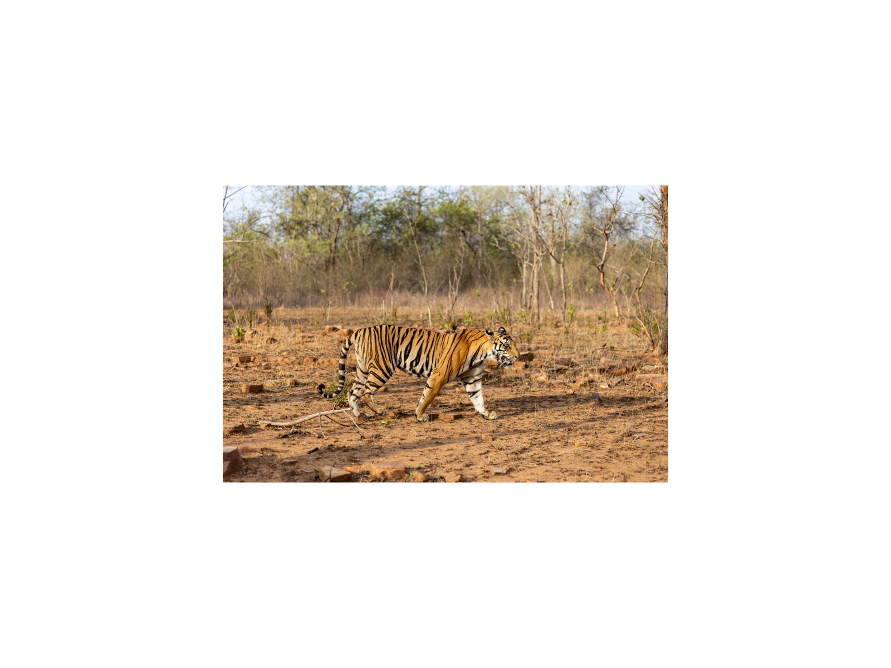
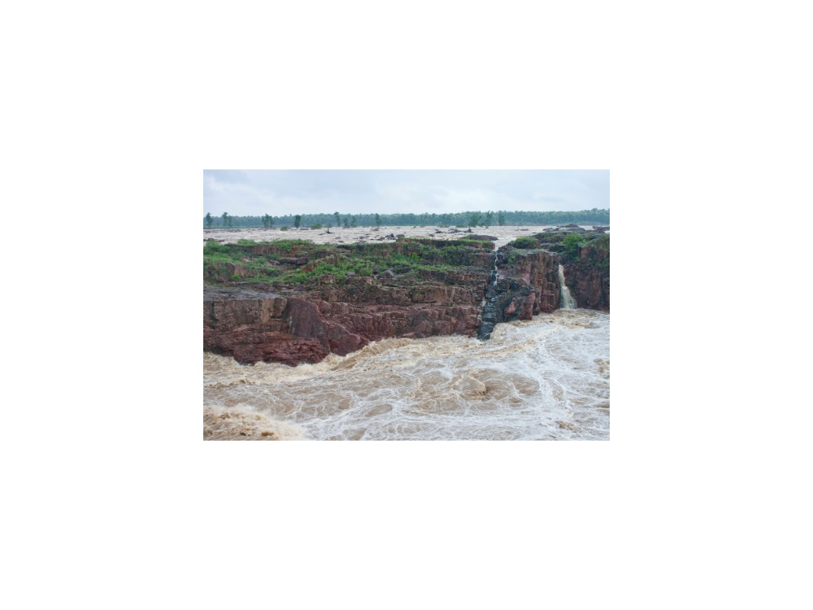
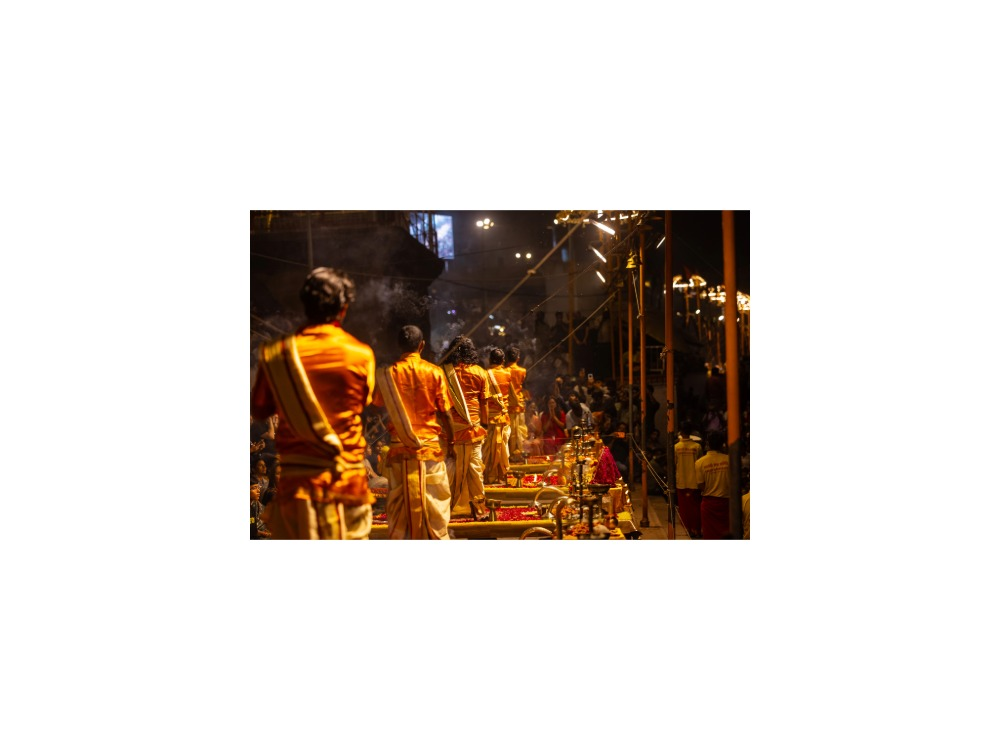
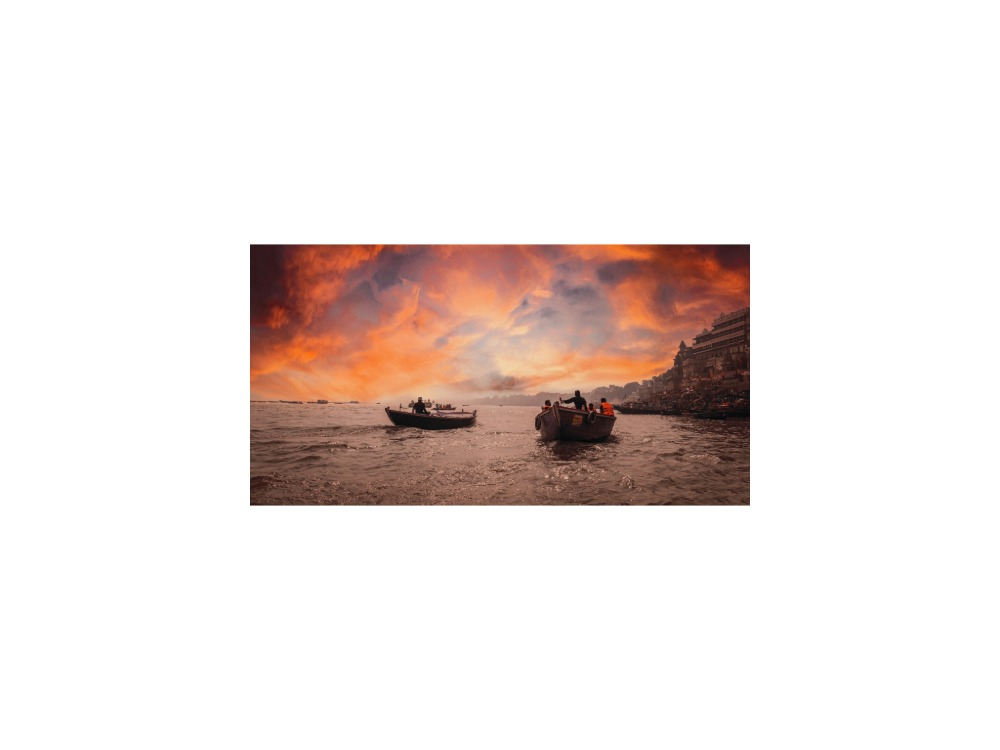
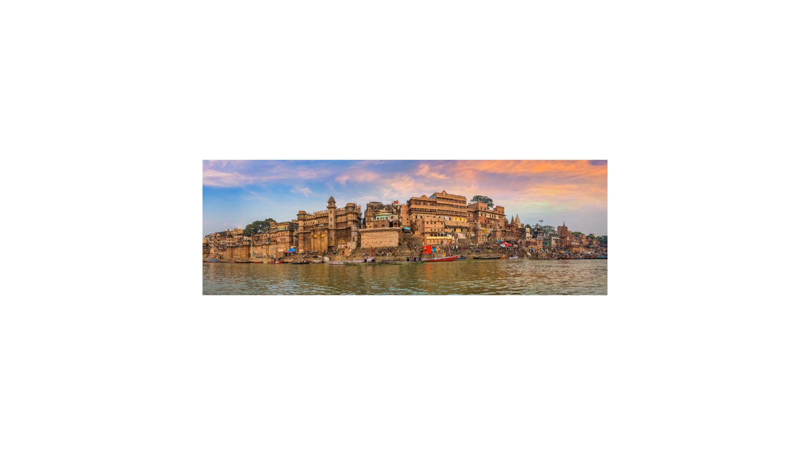
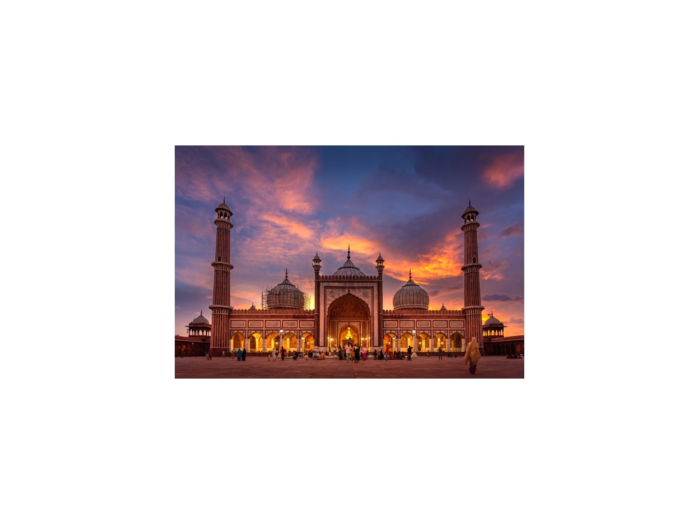

4-Day Khajuraho & Varanasi: Temples, Tigers & Sacred Ganges
Delhi · Khajuraho · Panna · Varanasi · Sarnath
The journey
Khajuraho's temples, a Panna tiger safari and the Ganges at Varanasi: from sculpture to ritual in four days.
Features the UNESCO World Heritage Khajuraho temples and the Buddhist site of Sarnath (Deer Park), alongside a wildlife game drive in Panna Tiger Reserve and a visit to the Raneh Falls canyon. Full days with several long drives. Best for energetic travellers.
Highlights
- Khajuraho UNESCO temple complex.
- Panna Tiger Reserve morning safari & Raneh Falls canyon.
- Ganges evening Aarti, sunrise boat ride, and Sarnath Deer Park.
Route and day by day
Schematic route, not to scale.
Day 1Delhi to Khajuraho & Temples Tour
Morning transit from Delhi to Khajuraho. Tour the UNESCO Western Group of Temples. Overnight in Khajuraho.
Day 2Panna Tiger Safari & Raneh Falls
Morning jeep safari in Panna Tiger Reserve. Excursion to Raneh Falls canyon. Overnight in Khajuraho.
Day 3Khajuraho to Varanasi & Evening Aarti
Transit to Varanasi by flight (flights not included). Direct Khajuraho–Varanasi services are limited, so confirm the routing; a connection via Delhi may be needed. Check into hotel; attend evening Ganga Aarti at Dashashwamedh Ghat. Overnight in Varanasi.
Day 4Sunrise Boat Ride, Sarnath & Return to Delhi
Dawn boat ride past the ghats of Varanasi. Excursion to Sarnath (Dhamek Stupa, Archaeological Museum with the Lion Capital of Ashoka). Flight back to Delhi (flight not included).
Best time to visit
Best Fair Avoid
Best time: Oct–Mar. Also good: Apr, Sep.
October to March is the comfortable season, with warm days and cool mornings. December and January can bring fog and cold at sunrise. April to June is very hot, so we start early and rest at midday. July to September is humid monsoon with fewer visitors. Panna safari zones usually close during the monsoon.
What is included
Included
- Private air-conditioned vehicle with driver
- Licensed guide (English or Russian)
- Monument entry fees
- Jeep safari
Not included
- Flights
- Hotels (quoted to your preferred category)
- Meals unless stated
- Tips and personal expenses
- Travel insurance
Indicative; your personal quotation confirms exactly what is included.
Places on this journey
Kandariya Mahadeva
Panna Tiger
Raneh Falls
Ganga Aarti
Sunrise Boat
Dashashwamedh Ghat Dhamek Stupa
Dhamek StupaQuestions
Is this journey private?
Yes. Every journey is for you and your travelling companions only, with your own guide, car and driver. There are no groups or shared tours.
Can I change the itinerary?
Yes. This itinerary is a starting point. Tell me your interests, pace and dates and I will adjust it before I quote.
Which languages are available?
Vikramjeet guides in English and Russian.
How demanding is this journey?
Full days with several long drives. Best for energetic travellers. The pace rating is fast pace.
How do I book, and when will I know the price?
Send a request with your dates. You receive a personal itinerary and quotation within 24 hours.
Themes
Spiritual & Multi-Faith UNESCO World Heritage Trail Wildlife & Eco-Safaris
Destinations
Similar journeys
 1 Day
1 Day1-Day Taj Mahal & Agra Fort: Private Day Journey from Delhi
Sunrise-fresh light on the Taj Mahal and the red sandstone courts of Agra Fort, in a single private day from Delhi, with your own guide and car.
View journey →
1 Day1-Day Imperial Delhi & Spiritual Heritage: Private Full-Day Tour
Old Delhi's lanes, Mughal tombs and sacred sites of three faiths, paced around you in one private day.
View journey → 1 Day
1 Day1-Day Jaipur Royal Express: Private Tour from Delhi
Amber Fort, the City Palace and the Pink City's best-known sights in one long day from Delhi, for travellers who have only a day to give.
View journey →